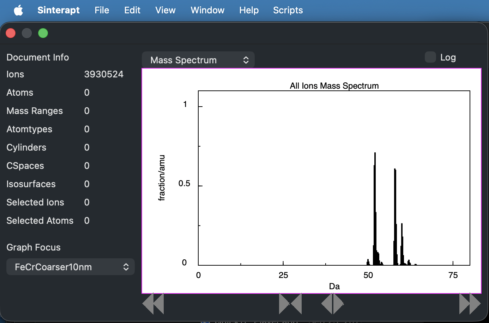
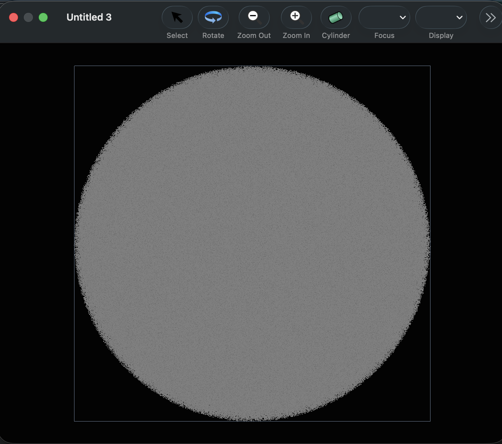

After launching the app, Choose "Open" from the file menu and choose a file in either the .pos or .apt formats. Alternatively, it is possible to double-click on a .pos or .apt file in the Finder -- it will open in Sinterapt if there are no other applications registered for that file type.
The app only supports .pos and .apt files for now. Additionally, the support for .apt only imports mass and position data -- if the .apt file contains other sections (for example, for voltage information), those sections are ignored.
When the file opens, two windows will appear, an inspector window which gives an overview of the objects identified in the file, and a graphics window which displays an ion/atom map.
The inspector window looks like this:

The left side of the window shows an overview of the various objects identified in this document. After opening a .pos file, there are no mass ranges or other geometrical objects defined, so only the ion count is something other than zero.
The right side of the window can display a number of graphs or images, depending on the current "focus". When a .pos file is opened, the focus is the collection of ions in the file, and a mass spectrum is displayed.
The buttons under the mass spectrum adjust the visible range of the mass spectrum.
The graphics window looks like this:

Because there are no mass ranges defined or atomtypes defined, all the ions are displayed in gray. All of the individual ions are displayed as single-pixel dots.
See the next page for how to manipulate the view in the Graphics Window: